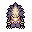
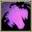
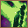
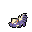

Pokédex / #434
Stunky #434
PoisonDark
It sprays a foul fluid from its rear. Its stench spreads over a mile radius, driving Pokémon away.
Generation 4 · Sinnoh

Stats
| Attack | 63 | |
|---|---|---|
| Defense | 47 | |
| Sp. Atk | 41 | |
| Sp. Def | 41 |
In the wild
| Wild level | 20–30 |
|---|---|
| HP | 63 |
| Experience | 5 |
| Egg groups | Field |
Evolution
- Evolves into Skuntank at level 34.
Moves
| Level | Move | Type | Category | Power | Energy | Cooldown | Effect | |
|---|---|---|---|---|---|---|---|---|
| 1 | Tackle | Normal | Physical | 15 | 15 | 1s | Tackle is one of the most common and basic moves a Pokemon learns. It deals damage with no additional effects. | |
| 1 | Scratch | Normal | Physical | 40 | 40 | 6s | Scratch inflicts damage and has no secondary effect. | |
| 1 | Focus Energy | Normal | Status | – | 70 | 60s | Increases Critical-Hit ratio by 50%. | |
| 3 | Poison Gas | Poison | Status | – | 30 | 7s | Poison Gas poisons the target. It will fail if the target is Poison or Steel-type. | |
| 7 | Screech | Normal | Status | – | 100 | 35s | Screech lowers the target's Defense by two stages. | |
| 9 | Fury Swipes | Normal | Physical | 18 | 45 | 9s | Fury Swipes inflicts damage, hitting 2-5 times per use. | |
| 13 |  | Smoke Screen | Normal | Status | – | 50 | 15s | Smoke Screen lowers the target's Accuracy by one stage. |
| 15 | Feint | Normal | Physical | 30 | 30 | 5s | Feint hits through moves such as Protect or Detect and lifts their effect. It has a short cooldown. | |
| 19 | Acid Spray | Poison | Special | 40 | 55 | 9s | Acid Spray inflicts damage and lowers the target's Special Defense by two stages. | |
| 21 | Bite | Dark | Physical | 60 | 60 | 9s | Bite deals damage and has a 30% chance of causing the target to flinch. | |
| 25 | Slash | Normal | Physical | 70 | 70 | 11s | Slash deals damage and has an increased critical hit ratio. | |
| 27 | Toxic | Poison | Status | – | 90 | 20s | Toxic causes the target to be badly poisoned. | |
| 31 | Night Slash | Dark | Physical | 70 | 70 | 11s | Night Slash deals damage and has an increased critical hit ratio. | |
| 33 |  | Memento | Dark | Status | – | 50 | 60s | Memento causes the user to faint and in return lowers the Attack and Special Attack stat of the target by two stages each. |
| 37 | Venom Drench | Poison | Status | – | 50 | 30s | Opposing Pokemon are drenched in an odd poisonous liquid. This lowers the Attack, Sp. Atk, and Speed stats of a poisoned target. | |
| 39 | Sucker Punch | Dark | Physical | 80 | 80 | 12s | Sucker Punch deals damage and has no secondary effect. | |
| 43 | Belch | Poison | Special | 60 | 60 | 13s | The user lets out a damaging belch at the target. | |
| 45 | Explosion | Normal | Physical | 250 | 100 | 180s | Explosion deals high damage, but causes the user to faint. |
Field abilities
CutRock SmashHeadbuttDig
Special abilities
Stench
Egg moves
AstonishCrunchDouble-EdgeFlame BurstFoul PlayHazeIron TailPlay RoughPunishmentPursuitScary FaceSlashSmog
Technical machines
Double TeamExplosionFacadeFire BlastFlamethrowerHidden PowerIron TailProtectRain DanceRestRoarSecret PowerShadow BallSludge BombSubstituteToxic
Drops
| Item | Amount | Chance | |
|---|---|---|---|
| bottle of poison | 1–4 | 88.9% | |
| venom pendant | 1 | 26.7% | |
| petrified goo | 1 | 6.67% | |
 | stunky doll | 1 | 0.1% |
| Toxic Plate | 1 | 0.002% |